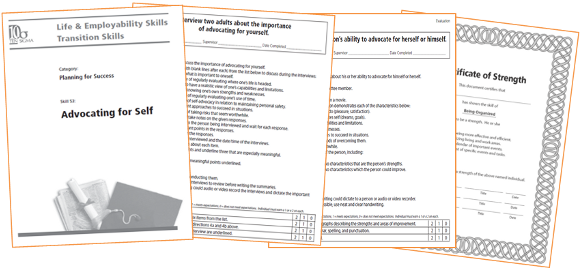

Activities for Transition can be purchased in hard copy to teach the 65 skills in the mild series and the 61 skills in the moderate series. The mild disabilities series is a seven-volume set and includes more than 500 active learning activities. Students completing this level are expected to be able to read and write at the sixth grade reading/writing levels.
Activities
Based on research from a wide variety of expert sources, TRAX Transition activities are carefully designed to cover the gamut of skills needed for an optimum result at each level of performance. Clearly written activities are easily incorporated into a student's plan using a straightforward system of categories. TRAX Transition activities include lessons, interviews, practice, evaluations, improvement plans and many other tasks.
Ten Sigma Transition activities available for
- Students with mild disabilities.
- Students with moderate disabilities.
Activities includes a variety of tools and tasks.
- Cover page.
- Unit rubric that defines the skill in detail.
- Table of contents/unit progress report.
- Lesson overviews.
- Interviews and observations.
- Practice activities.
- Evaluations/plans for improvement.
- Scenarios and authentic challenges.
- Certificates of strength and accomplishment.

Learn more about Activities for Higher-Functioning Students
Learn more about Activities for Students with Moderate Disabilities